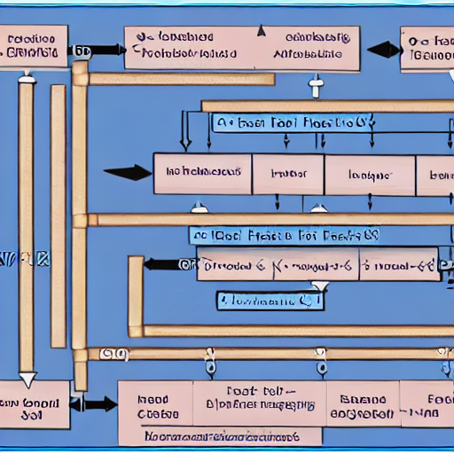
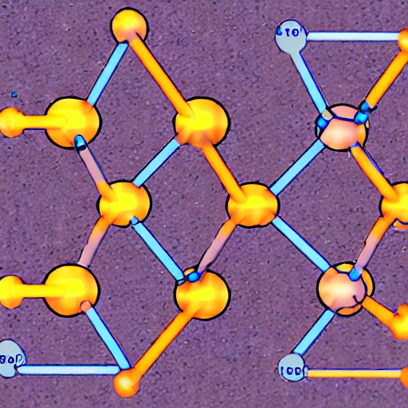
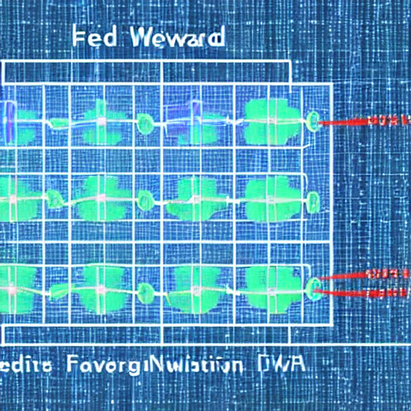
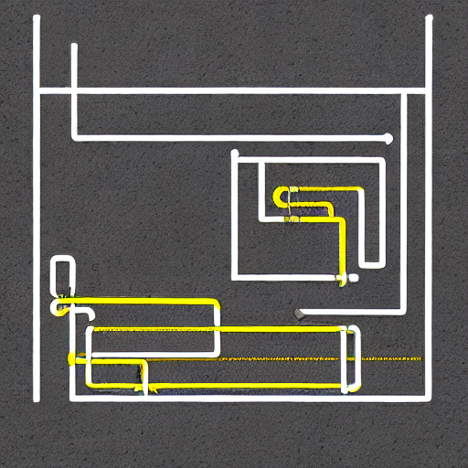

Abdullah Altaweel
Hackathon Project
Hello
Game Developer
Programmer
Researcher
Artist
Worked on creating a generative image model to create educational visual aids for AI research topics.


Collected a custom dataset using Anthropic’s API to get keywords to use for web-scraping for educational images.


NOTE: This project was built in the duration of 48 hours and the model was trained for less than 3 hours.
Finetuned and trained a stable diffusion model from HuggingFace by deploying it on a high-performance Google Cloud server.
Socials
InstagramLinkedIn
abdullah.altaweel2002@gmail.com